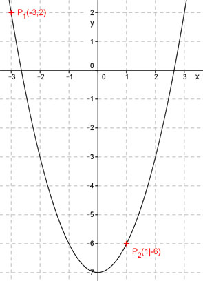

Aufgabe 55 Bestimmen Sie die Funktionsgleichung der Parabel der Form y = ax2 + b, die durch die Punkte P1(-3|2) und P2(1|-6) geht. Punktkoordinaten xS = -3 und yS = 2 eingesetzt: 2 = a * (-3)2 + b 2 = 9a + b (1) Punktkoordinaten x2 = 1 und y2 = -6 eingesetzt: -6 = a * 12 + b -6 = a + b (2) Lineares Gleichungssystem: 2 = 9a + b -6 = a + b | *(-1) 2 = 9a + b 6 = -a - b ------------ 8 = 8a |:8 a = 1 a = 1 in (1) eingesetzt: 2 = 9 + b |-9 b = -7 y = x² - 7 